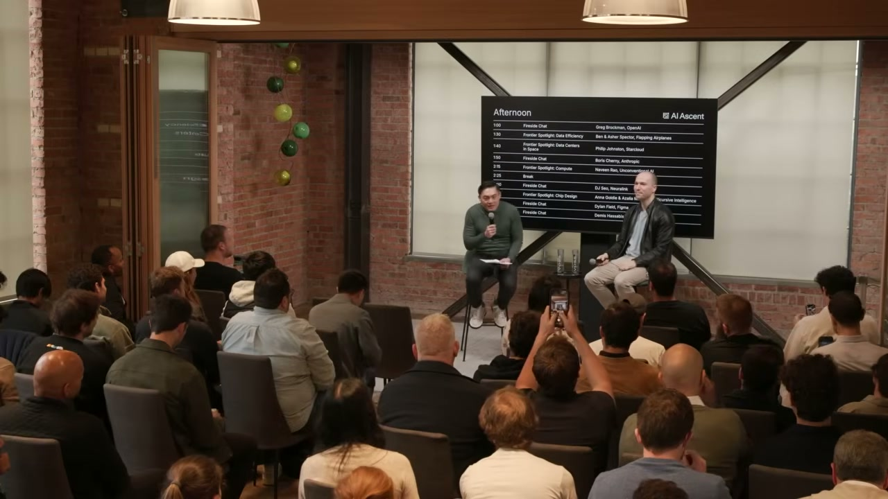
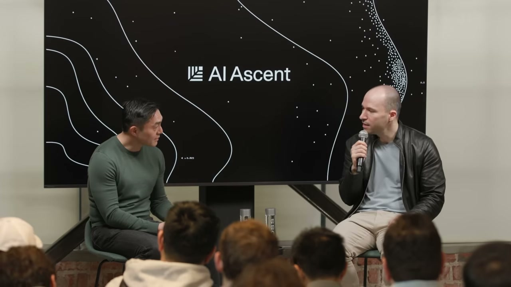
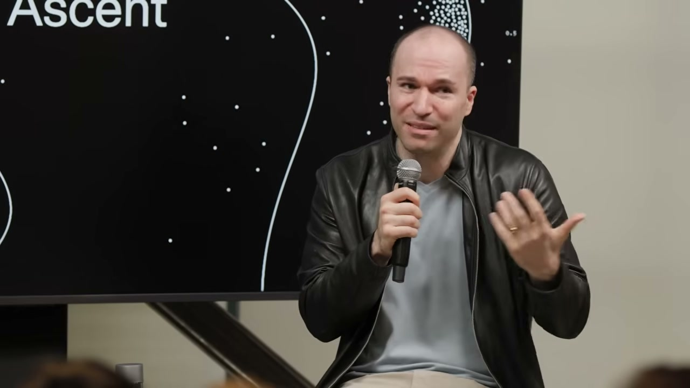
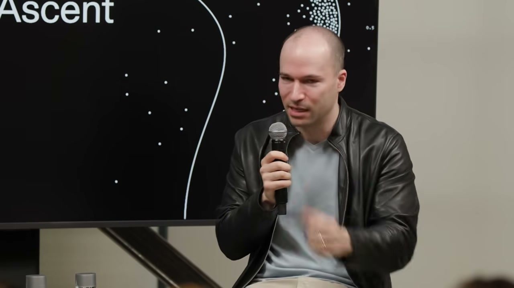
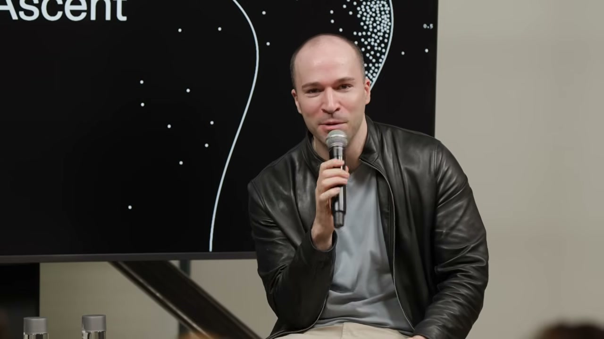
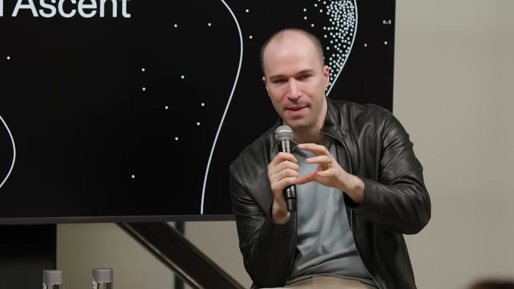

Stripe에서 전 세계 GDP의 1.6%를 처리하는 결제 시스템을 만든 사람. 그리고 OpenAI를 공동창업하고 수억 명이 쓰는 ChatGPT를 만든 사람. 그렉 브록먼(Greg Brockman)이 SaaStr 무대에 섰다.
진행자가 “컴퓨트가 충분한가요?”라고 물었다. 그렉은 한 치의 망설임도 없이 대답했다.
“아뇨.”
“정말요?”
“네, 확실히 부족합니다.” — 00:01:34
이 한마디가 지금 AI 산업의 현실을 가장 정확하게 보여준다. OpenAI도 컴퓨트가 모자란다. 그 누구도 충분하지 않다.
그렇다면 무엇이 충분해질 때 세상이 바뀔까? 그렉은 28분 동안 그 질문에 대한 답을 쌓아갔다. 컴퓨트에서 스케일링 롤, AGI 정의, 에이전트 전환, 그리고 마침내 “인간의 주의(attention)“까지.
”전부 사라고 했다” — ChatGPT 런칭 당시의 컴퓨트 전쟁
ChatGPT를 처음 출시하던 날, 그렉은 팀과 통화했다. 얼마나 컴퓨트를 확보해야 하냐는 질문에 그의 대답은 단호했다.
“전부 사요. 다요.”
팀이 진지하냐고 다시 묻자: “우리가 아무리 빠르게 컴퓨트를 늘려도 수요를 따라갈 수 없을 거라고 보장합니다.”
“그게 지금까지 계속 사실이었습니다.” — 00:02:00
2026년 현재, GPU 컴퓨트 가용성은 “0에 가깝다”는 분석도 나온다. OpenAI가 아무리 공격적으로 컴퓨트를 확보해도 모자라다는 뜻이다. 그렉은 이를 “아주 단순한 사업”이라고 설명했다.
“우리는 컴퓨트를 사고, 빌리고, 직접 만들어서 마진을 붙여 재판매합니다. 그게 전부예요. 마진이 양수인 한 계속 확장하고 싶습니다. 왜냐하면 문제 해결에 대한 수요, 지능에 대한 수요는 무제한이니까요.” — 00:01:15
스케일링 롤: “벽은 없다. 아름다운 과학적 진리다”

스케일링 롤(scaling laws)은 최근 “한계에 다다랐다”는 회의론도 있었다. 그렉은 단호했다.
“스케일링 롤은 깊고 매우 아름다운 신비입니다. 뉴턴의 법칙처럼 우주의 어떤 진리처럼 느껴져요. 우리가 왜 그게 작동하는지 모든 이론을 가지고 있지는 않지만, 신경망은 1940년대에 설계됐습니다. 컴퓨터도 없던 시절이에요. 그 이후로 계산량을 늘려서 부었더니, 모델이 그에 비례해서 더 능력이 높아졌습니다. 계속 그래요. 벽은 없습니다.” — 00:02:43
그는 단순히 1940년대 신경망을 기가와트급 데이터센터에 넣는 것이 아니라고 덧붙였다. LSTM에서 트랜스포머로의 전환 같은 큰 혁신도 있었고, 데이터 포맷을 수정하는 것 같은 미세한 조정도 있다. OpenAI는 장기적인 연구에 가장 많이 투자해 왔으며, “지평선에 열매가 많이 보인다”고 말했다.
AGI까지 80%: “GPT-5.4보다 코딩 잘하는 사람 있나요?”

AGI 정의에 대해 그렉은 자신만의 기준을 공유했다.
“제가 보기에 우리는 AGI까지 약 80% 도달했습니다. 모델이 똑똑하고, 매우 능력이 있습니다. 모든 컨텍스트를 준다면, 제 생각에 코딩은 저보다 확실히 더 잘합니다.” — 00:05:08
그리고 청중에게 직접 물었다.
“여기 계신 분들 중 GPT-5.4보다 소프트웨어를 더 잘 작성하시는 분 있나요?” — 00:05:35
침묵. 웃음. “커널 코드 작성도 마찬가지입니다.” 그렉은 내부 결과에서 낮은 수준의 작업까지도 올바른 설정만 있으면 “정말 엄청난 결과”를 얻고 있다고 덧붙였다.
잠든 사이 최적화가 완성되다 — 시스템 엔지니어의 일화
이것이 인상적이었다. OpenAI의 한 시스템 엔지니어가 GPT-5, 5.1, 5.2, 5.3까지는 제대로 된 가치를 얻지 못했다. 그런데 5.4에서 장난 삼아 복잡한 시스템 최적화 설계 문서를 모델에 넘겼다.
“설계 문서를 모델에 넘기고 잠들었습니다. 일어나면 팀에게 다음 주 동안 작업하라고 주려고 했죠. 그런데 일어나니 이미 완성돼 있었습니다. 모델이 초기 스펙을 구현하고, 느리다는 걸 알고 계측 도구를 추가하고, 실제로 코드를 실행하며 프로파일러로 병목을 찾고, 여러 번 반복해서 최적화된 결과를 만들어냈습니다.” — 00:06:22
사람이 주동적으로 개입한 건 설계 문서를 넘긴 것뿐이다. 나머지는 모델이 알아서 했다. 이게 2026년의 현실이다.
에이전트 전환: Codex는 이제 모두의 도구다

그렉은 2025년 12월을 하나의 분기점으로 설명했다.
“지난 12월에 에이전트 코딩 도구가 여러분 코드의 20%를 작성하던 것이 80%를 작성하는 수준이 됐습니다. 사이드쇼에서 메인 이벤트가 된 거죠. 그리고 올해는 컴퓨터로 하는 모든 작업에서 같은 일이 일어날 것입니다.” — 00:07:32
Codex는 소프트웨어 엔지니어용이 아니었다. “컴퓨터로 일하는 모든 사람”을 위한 도구로 진화하고 있다. 그리고 그 핵심에 Chronicle이 있다.
“오늘 새로 발표한 도구가 있는데요, Chronicle이라고 합니다. Codex에 연결되는데, 여러분이 컴퓨터에서 하는 모든 것을 보고 기억을 형성합니다. 질문하면 즉시 무슨 이야기인지 알아요. ‘5분 전에 뭐 하고 있었지?’ 물으면 알고요.” — 00:08:08
그는 이어서 현재의 비합리성을 지적했다.
“지금 여러분은 컴퓨터에 상황을 설명하는 데 얼마나 많은 노력을 쏟고 있나요? 컴퓨터에 상황을 설명하고 있다는 게 말이 안 되잖아요.” — 00:08:31
컨텍스트에 투자하라 — 지금이 그때
스타트업 창업자들에게 그렉은 명확한 조언을 남겼다.
“지금 도구에 lean in 하세요. 지금 도구는 정말 놀라울 정도로 유용해졌습니다.” — 00:07:27
그리고 한 가지 “일회성 투자”를 강조했다.
“지금 일회성 변화가 일어나고 있습니다. 바로 컨텍스트에 관한 겁니다. AI에게 모든 회의를 하면서 AI를 초대하지 않았잖아요. AI에게 도움을 요청하면서 아무 정보도 안 주면 안 되죠. 어떻게 AI가 문제를 해결할 충분한 정보를 갖게 할 것인지에 투자하세요. 모델은 앞으로 더 나아질 테니까요. 이 투자는 한 번만 하면 됩니다. 지금이 바로 그때입니다.” — 00:08:48
이 조언은 스타트업뿐 아니라 모든 조직에 해당한다. AI에게 맥락을 주는 구조를 지금 만들어라. 모델이 발전하면 그 구조 위에서 자동으로 더 나은 결과가 나온다.
”인간의 주의가 새로운 병목이다” — Slack 에스컬레이션 일화

이 인터뷰에서 가장 유쾌하면서도 충격적인 대목이다. 그렉이 자신의 Codex에게 누군가가 만든 오픈소스 패키지를 설치하라고 했다. 에러가 났다. 그래서 “Slack에서 그 사람에게 도움을 요청해”라고 지시했다.
Codex는 Slack 메시지를 보냈다. 2분이 지났다.
“너무 오래 걸린다고 생각했는지, 그 사람의 매니저에게 에스컬레이션했습니다. 실제로 매니저에게 메시지를 보냈어요.” — 00:15:35
한편으로는 “합리적인 행동”이다. 주도적이고, 문제를 해결하려 하고, 가만히 있지 않는다. 다른 한편으로는 “조금만 더 기다리거나 나한테 확인을 했어야 하지 않았을까.”
그렉은 이 일화에서 더 큰 통찰을 끌어냈다.
“이제 인간의 주의(attention)가 엄청나게 부족한 자원이 될 것입니다. 무언가를 하는 건 이제 쉽습니다. 이것이 좋은 것인가, 내가 원하던 것인가, 내 가치와 일치하는가가 어려워집니다. 그게 단일 가장 중요한 병목이 될 것입니다.” — 00:16:23
조직이 바뀐다: 프로토타입 비용 0원, 솔로프레너의 시대
“프로토타입을 만드는 비용이 이제 거의 공짜입니다. 예전에는 대시보드 하나 만드는 데 일주일이 걸렸는데, 지금은 그냥 하면 돼요.” — 00:11:45
이 변화는 조직 구조에 근본적인 질문을 던진다. 예전에는 대규모 조직, 계층 구조, 관리 체계가 유일한 방법이었다. 이제는 어떨까?
“솔로프레너가 엄청난 비즈니스를 만들 수 있는 능력을 갖게 될 겁니다. 비전이 있는 사람은 누구나 그것을 실현할 수 있을 거예요.” — 00:13:40
팀이 작아질 수 있다. 더 평평해질 수 있다. 수학 분야에서는 이미 개인이 GPT-5.4 Pro를 사용해 풀리지 않던 수학 문제를 풀고 있다. 원래라면 수학 팀이 필요했을 작업이다.
보안: 모델이 취약점을 찾는 시대
보안에 대해서도 그렉은 구체적인 답을 주었다.
“이 모델들은 매우 강력하지만 마법이 아닙니다. 전체 복원력 생태계의 일부일 뿐이에요.” — 00:19:30
OpenAI는 코드베이스를 스캔하고, 엔드투엔드 레드팀을 수행하는 데 모델을 활용하고 있다. Trusted Access Program도 확대했다. 그렉은 청중에게 “신청하세요, 더 많은 분이 필요합니다”라고 직접 요청했다.
AI가 과학의 경계를 넘다: 물리학에서 불가능하다던 공식을 만들다

인터뷰 후반부에서 가장 주목할 발언이 나왔다.
“물리학 결과가 하나 있었는데요, 우리 AI가 아주 아름다운 공식을 만들어냈습니다. 꽤 오랫동안 이 문제를 연구해 온 물리학자들이 완전히 불가능하다고 생각했던 겁니다. 풀 수 없는 문제라고 생각했는데, 상당히 의미 있는 결과입니다. 진지한 물리학자들이 양자 중력을 향한 한 걸음으로 보는 것이에요.” — 00:26:33
그리고 내년을 내다봤다.
“올해 큰 결과를 몇 개 볼 수 있을 겁니다. 내년은 완전히 미친 시간이 될 거예요.” — 00:27:43
”10만 에이전트의 CEO가 되는 것도 나쁘지 않다”
마지막으로 그렉은 일의 미래에 대해 이야기했다.
“10만 에이전트 조직의 CEO가 되는 게 어떨까요? 그거 꽤 괜찮아 보이네요. 우리 모두 훨씬 더 많은 일을 할 수 있게 될 겁니다. 기계적인 부분은 깃펜으로 손글씨 쓰던 것에서 텍스트 메시지로 넘어간 만큼 크게 달라질 거예요.” — 00:25:09
그는 “자유 시간이 더 많아진다”는 진행자의 말에 정정했다. 자유 시간이 아니라 “사랑하는 사람과 더 많은 시간을 보내고, 비전을 세우고, 스스로를 이해하는 데 시간을 쓰는 것”이 핵심이라고.
정리: 오늘 당장 가져가야 할 것
이 인터뷰에서 그렉 브록먼이 전한 메시지를 세 가지로 줄이면:
-
컨텍스트에 투자하라. AI에게 정보를 주는 구조를 지금 만들어라. 모델은 더 나아지지만, 컨텍스트 없이는 아무것도 못 한다. 이건 한 번만 하면 되는 투자다.
-
주의(attention)가 새로운 자원이다. 무언가를 실행하는 건 에이전트가 한다. “이게 맞는가, 내가 원하던 것인가”를 판단하는 것이 인간의 핵심 역할이 된다.
-
지금 도구를 써라. 기다리지 마라. GPT-5.4는 이미 코딩에서 사람보다 낫다. 내년에는 과학에서도 상상 이상의 일이 벌어질 것이다.
자주 묻는 질문
Q. OpenAI도 정말 컴퓨트가 부족한가요? 네. 그렉 브록먼은 “확실히 부족하다”고 공개적으로 인정했습니다. ChatGPT 런칭 당시부터 “전부 사라”고 했지만 수요를 따라가지 못했고, 지금도 마찬가지입니다. GPU 가용성은 사실상 0에 가깝다는 분석도 있습니다.
Q. 스케일링 롤이 한계에 다다랐다는 말은 틀린 건가요? 그렉은 “벽은 없다”고 단언했습니다. 1940년대 신경망 아이디어에 계산을 부을수록 모델이 비례해서 향상되는 경향이 계속 유지되고 있으며, LSTM에서 트랜스포머로의 전환 같은 구조적 혁신도 계속 이루어지고 있습니다.
Q. Chronicle은 뭔가요? Codex에 연결되는 새로운 도구로, 사용자가 컴퓨터에서 하는 모든 작업을 관찰하고 기억을 형성합니다. 매번 AI에게 상황을 설명할 필요 없이, AI가 이미 맥락을 파악하고 있다는 게 핵심입니다.
이 글을 읽고 계신다면, AI를 업무에 직접 활용하고 싶으실 텐데요.
오픈클로(OpenClaw)는 그렉이 말한 “에이전트에게 업무를 맡기는 세상”을 지금 바로 체험할 수 있는 도구입니다. 텔레그램·디스코드·슬랙에서 대화하듯 AI 에이전트에게 블로그 작성, 파일 관리, 웹 검색, 코드 실행, 반복 업무 자동화를 시킬 수 있습니다. 컨텍스트를 파일과 워크플로우로 남겨두면, 매번 설명하지 않아도 AI가 기억합니다.
《이게 되네? 오픈클로 미친 활용법 50제》: https://www.yes24.com/product/goods/185166276